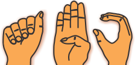

Beranda
SIBI
Kategori
Abjad
Bilangan
Kata Benda
Kata Kerja
Kata Sifat
Imbuhan Awalan
Imbuhan Akhiran
Petunjuk
Tentang
Open Panel
Kata Sifat
back
Bagus
Baik
Baru
Benar
Berat
Besar
Bingung
Bisu
Cantik
Cepat
Demam
Dingin
Duka
Gelisah
Gembira
Hangat
Haus
Iba
Jelek
Jenaka
Kasar
Kecil
Kesal
Lapar
Lawak
Lebar
Lebih
Lemah
Lembut
Lengkap
Malas
Mancung
Marah
Mual
Mudah
Panas
Pandai
Panjang
Patah
Pendek
Puas
Pucat
Pusing
Rapi
Rendah
Rindang
Rindu
Ringan
Sabar
Sakit
Salah
Sama
Sehat
Selamat
Senang
Sendiri
Sibuk
Sopan
Suka
Susah
Takut
Tenang
Timbang